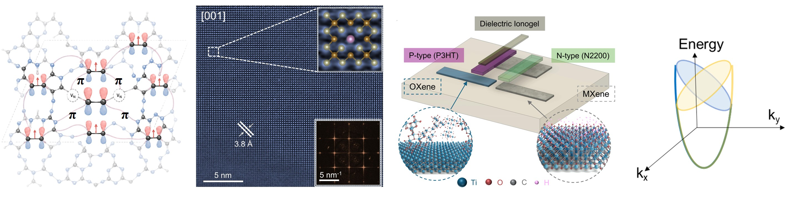
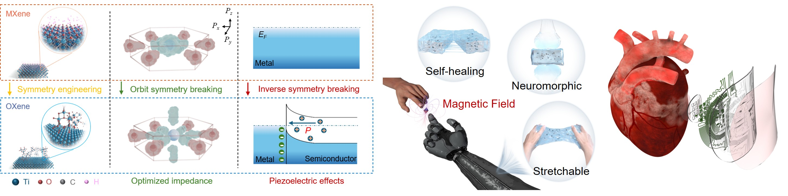
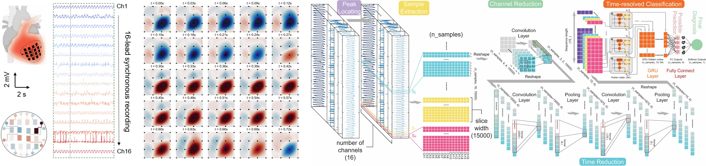

OUR INTERESTS
Research
We explore emerging materials, physical phenomena, and intelligent electronic systems at the intersection of materials science, physics, engineering, and medicine.
OUR INTERESTS
We explore emerging materials, physical phenomena, and intelligent electronic systems at the intersection of materials science, physics, engineering, and medicine.
We engineer ferroic and intelligent materials by controlling symmetry, defects, exchange interactions, and interfacial electronic structures. Our research spans metal-free molecular magnets, high-temperature two-dimensional ferromagnetic semiconductors, symmetry-engineered polar materials, and multipolar magnetoelectric systems. By linking atomic-scale structural reconstruction with spin polarization, superexchange, piezoelectricity, and higher-order magnetic order, we seek to create material platforms whose magnetic, electronic, and polar states are robust, tunable, and reconfigurable. These emerging ferroic functionalities provide new opportunities for spintronic devices, adaptive electronics, intelligent sensing, and biointegrated technologies.

Engineering ferroic order through defects, doping, symmetry, and exchange interactions across molecular and low-dimensional materials.
We develop flexible and soft bioelectronic systems by engineering materials, interfaces, and device architectures that seamlessly couple electronics with the human body. Our research leverages symmetry breaking, interfacial charge transport, Schottky-induced polarization, and self-assembled functional domains to create low-impedance, mechanically compliant, and highly responsive electronic interfaces. These material innovations enable high-fidelity physiological sensing, multimodal cardiac monitoring and therapy, wireless and battery-free operation, and adaptive human–machine interactions. By integrating soft mechanics with emerging electronic, magnetic, and neuromorphic functionalities, we aim to develop bioelectronic platforms that are conformal, intelligent, and responsive to complex physiological environments.

Engineering soft bioelectronic interfaces from symmetry-controlled charge transport to wireless physiological sensing and intelligent human-machine interactions.
We integrate advanced sensing devices with artificial intelligence to develop application-specific solutions for biomedical monitoring and healthcare. High-fidelity, multichannel physiological signals acquired from wearable and implantable interfaces are coupled with machine-learning and deep-learning frameworks for signal recognition, spatiotemporal mapping, disease-state classification, and predictive analysis. We also explore intelligent interfaces that combine neuromorphic material responses with AI-based decoding to recognize complex interactions and retain temporal information. By connecting device-level innovation with data-driven intelligence, we aim to transform rich physiological signals into actionable information for personalized monitoring, early diagnosis, and adaptive healthcare.

From high-fidelity biomedical sensing to AI-enabled interpretation, prediction, and personalized healthcare.